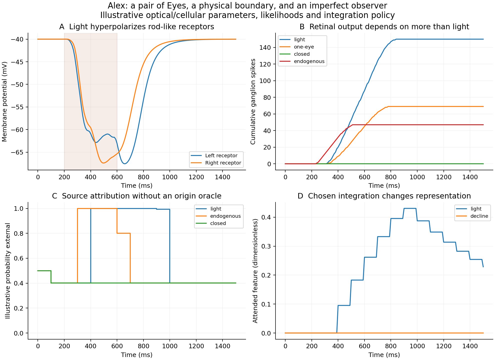

A pair of Eyes / A physical and interpretive boundary
Alex has a window
into the world.
Photons enter one or both eyes. Receptors change their electrical state. Retinal cells send events toward the Brain. Alex must then estimate what those events mean.
Originating framework, direction, attended-integration and concept-lifetime interpretations: Michael Emanuel Glover. Research, implementation and analysis developed with the assistant.
01 / Physical contact
Photons cross an optical window.
photon energy = h*c / wavelength
arrival rate ∝ pupil area * cos(angle) / distance²
Eye → retinal Organ → rod-like receptor → ON bipolar → ganglion
↓
BrainBoth Eyes belong to the existing Body. Each owns its optical frame and retinal cells. Source position, pupil area, orientation, wavelength, transmission and shot noise determine the incoming events. Closing one window leaves the other available.
This first retina pools light into one rod-like channel per eye. The optical model is a far-field collector with a limited field of view; images, colour, refraction and stereo depth need further structure.
02 / A vertebrate-inspired pathway
Light makes the receptor more negative.
A reduced opsin–PDE–cGMP pathway closes CNG conductance. The receptor hyperpolarizes; an effective ON pathway then drives spiking ganglion cells. The existing NervousSystem routes those events into the Brain.

03 / Inside and outside
A signal is evidence about a source.
Alex’s BoundaryObserver receives visual and interoceptive event counts over a known interval. It compares explicit likelihoods and returns a probability of an external-dominant source. The function receives no photon/endogenous truth label.
Identical features give identical inference, even if their causes differ. Internally generated receptor activation can therefore resemble an external stimulus. The likelihoods are chosen hypotheses; they are not calibrated human diagnostic probabilities.
A physical reference frame
An eye has a position and orientation. These determine which external events it can measure. Changes to that frame can change the input.
A research connection
Fields, Glazebrook and Levin’s quantum-reference-frame paper motivates questions about physical measurement systems and memory. This implementation develops a classical analogy; quantum-state and QRF dynamics remain a research direction.
04 / Will and integration
Attend, interpret, and integrate are distinct operations.
Michael’s proposal—what one beholds, one gradually becomes—has an explicit, limited implementation: attended evidence can gradually update a self-representation. A small Will class sets attention and permits or declines that update.
feature_next = feature + learning_rate * attention * (evidence - feature)
Declining this update preserves perception and physiological processing. The representation policy does not command immune compatibility, tissue survival or medication tolerability; those require their own mechanisms.
| Experiment | Retinal output | Attended representation |
|---|---|---|
| Light, integration permitted | Responds | Updates gradually |
| Same light, integration declined | Identical physical response | Unchanged |
| Closed windows, endogenous pulse | Can respond without photons | Depends on inferred evidence and policy |
05 / Progression and reuse
A representation can retire. Its concept can remain.
Retiring an active feature removes its current instance while retaining its definition in Alex’s vocabulary. A later permitted observation can create a fresh instance. This implements Michael’s computational interpretation of deconstruction as progression.
model.alex.retire_representation("light_activity");
// The definition remains available for later use.06 / Continue slowly
One Eye, one method, one question.
auto model = virtual_cell::vision::make_seeing_alex(); auto& body = model.alex.human().body(); body.eye(0).window().set_open(false); body.eye(1).window().set_open(true);
The left window is closed and the right is open. Both Eyes remain owned by the Body, with their cells and resources managed by ordinary C++ value lifetimes.
cmake -S . -B build cmake --build build -j 2 ctest --test-dir build --output-on-failure ./build/vision_demo light python3 experiments/eyes/analyze.py
Nine C++ suites and the five empirical IMPase Python checks pass. The published notes distinguish physical laws, biological motivations, reduced mechanisms and Michael’s proposed representational rules.